In Bangladesh, finding blood during an emergency still depends on saved phone numbers, scattered Facebook groups and word of mouth — a slow, unreliable process that also exposes donors to spam and opens the door to fraud and middlemen. Blood Finder is a web platform that solves this by letting anyone search a pool of admin-verified donors by blood group and district in seconds, post urgent needs on a public emergency board where nearby donors step forward, and register as a donor — all on a mobile-first, Bangla interface.
The project began as a JavaFX desktop application for our Object Oriented Programming course and was then rebuilt as a production web application using Next.js 16, TypeScript and Supabase (PostgreSQL + Auth), keeping the same object-oriented domain model (User, Donor, BloodRequest, DonationRecord). Trust and privacy are the core design principles: a donor's phone number is never public, every donation is confirmed by the receiver (not the donor) to prevent fake counts, and the database itself blocks anonymous visitors from ever reading personal data. The result is a live, usable platform that turns the concepts learned in an OOP lab into a real product.
Blood cannot be manufactured — it can only come from a donor. Yet when a patient suddenly needs blood, families are left calling around, posting on social media and hoping a matching donor is nearby, free and eligible. Precious time is lost, and the process is easy to exploit.
Blood Finder is our answer: a single, trusted platform that connects patients with verified blood donors across all 64 districts of Bangladesh. Users can search donors by blood group and area, send a request, or post an urgent need on a public board where nearby donors respond with one tap. The interface is mobile-first and primarily in Bangla, because our target users are ordinary people using everyday phones.
This project also has an academic story. It started as a JavaFX + SQLite
desktop application built for our Object Oriented Programming (OOP) Lab, using a
clean object model and the Model–View–Controller pattern. We then rebuilt the
same idea as a production web application so that it could actually be used by
people on their phones — carrying the same OOP design into a modern stack. The
original desktop version is preserved on the desktop-app branch of
the repository.
Finding blood quickly in Bangladesh is harder than it should be:
Today people rely on a mix of informal channels, each with serious gaps:
| Current approach | Limitation |
|---|---|
| Saved phone numbers / personal contacts | The one person may be unavailable, out of town, or recently donated. |
| Facebook / area groups | Must find and join the right group; posts get buried; responses are slow and unverified. |
| Local blood-donation clubs | Each keeps its own list; the lists are not connected or searchable. |
| Paid "donor" middlemen | Charge money, may be fake, and expose families to fraud. |
| Stand-alone desktop apps | Single machine, single user, no shared data, must be installed — and our users are on mobile. |
None of these provide a single, verified, searchable, privacy-respecting and mobile-friendly system — which is exactly the gap Blood Finder fills.
Blood Finder is one web platform with three main flows, supported by an administration panel and a statistics map.
The application has three layers: a React client in the browser, the Next.js server (Server Components, Server Actions and route protection) running on Vercel, and Supabase (PostgreSQL + Auth) where Row Level Security and column-level grants protect the data. Public reads go straight to the database with a restricted anonymous key; everything that writes data goes through a server action that re-checks the user.
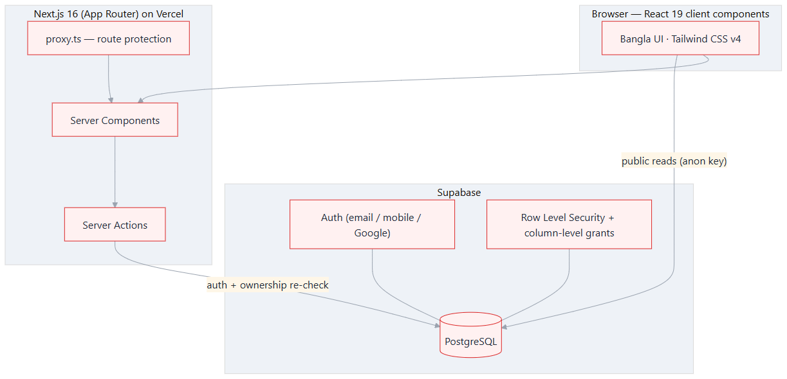
Four actors interact with the system: a Visitor (not logged in), a Donor, a Requester (a registered user who needs blood), and an Admin.
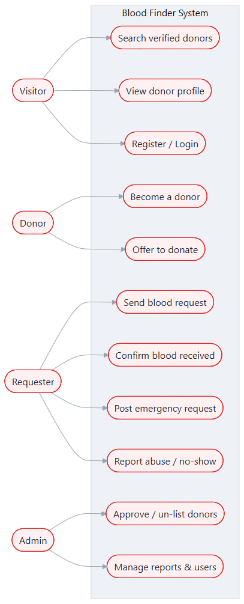
The object model is the heart of the project and is shared between the desktop
and web versions. The main classes are Profile (user),
Donor, BloodRequest, DonationRecord,
EmergencyRequest and EmergencyOffer.
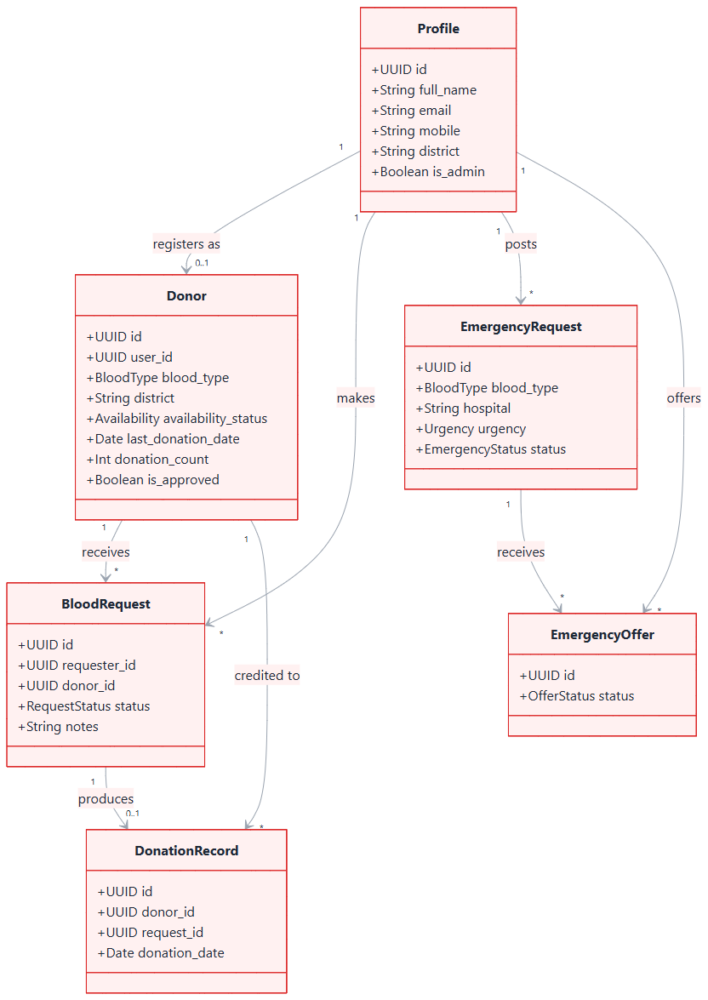
The database has eight tables, all protected by Row Level Security. The entity-relationship diagram below shows how they relate; the table after it summarises each one.
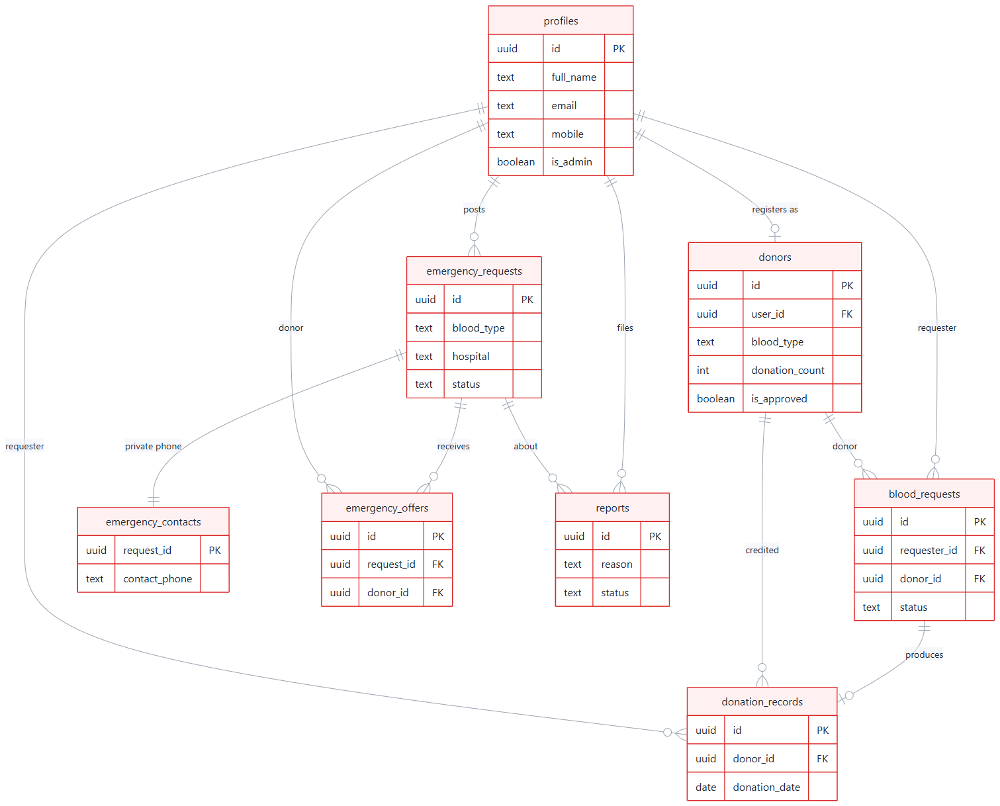
| Table | Purpose |
|---|---|
profiles | Extends the auth user — name, email, mobile, district, admin flag. |
donors | Donor record — blood type, location, availability, last donation date, donation count, approval status. |
blood_requests | Direct requests from a requester to a donor (PENDING → ACCEPTED → COMPLETED / CANCELLED). |
donation_records | Immutable log of completed donations; inserting one bumps the donor's count via a trigger. |
emergency_requests | Public emergency needs board (blood type, hospital, urgency, status). |
emergency_contacts | The requester's phone number, kept in a separate table so it stays private. |
emergency_offers | "I can donate" responses from donors to an emergency request. |
reports | Abuse / no-show / fake-request reports that feed the admin queue. |
The sequence diagram below shows the most important flow — from a request to a recorded donation — and where the anti-fraud rule applies: the donation is confirmed by the receiver, never by the donor.
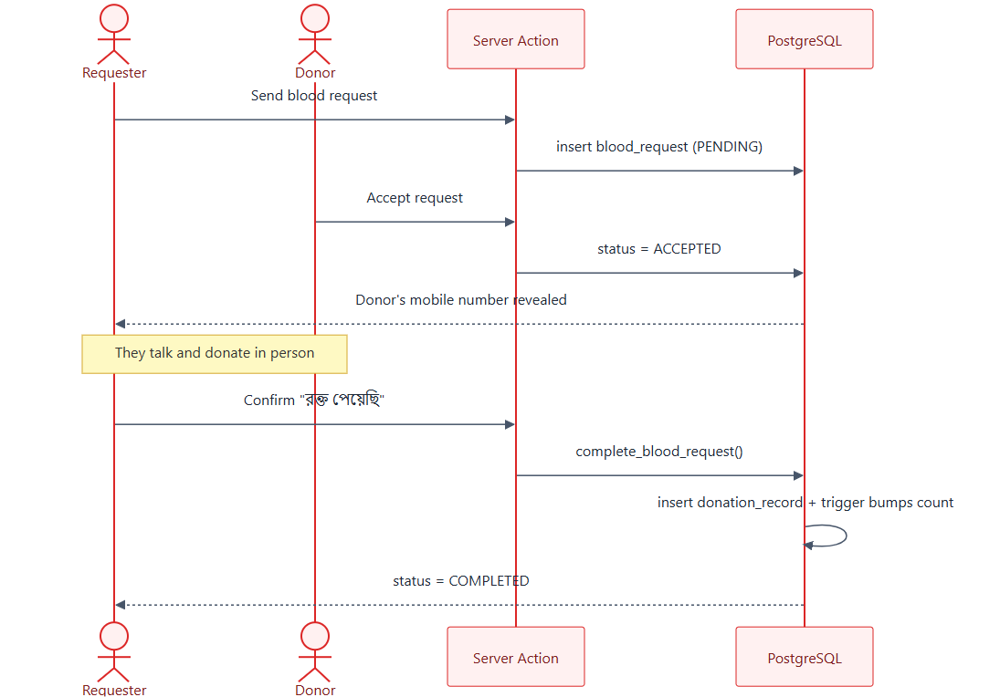
The most important lesson from the OOP course is not a language — it is a way of thinking: split a problem into objects, hide data and details, reuse code, and separate responsibilities. The same domain model we designed for the desktop app lives on in the web app as typed interfaces. The table below maps each concept to both versions.
| OOP concept | Desktop (Java / JavaFX) | Web (TypeScript / Next.js) |
|---|---|---|
| Encapsulation keep data private |
Donor.java uses private fields with getters/setters — no other class changes its data directly. |
One module (eligibility.ts) holds the 90-day rule; the whole site calls that single place. |
| Abstraction hide the details |
A Repository interface hides SQLite; the service layer never sees SQL. | Server Actions hide the database; a UI component just calls acceptRequest(). |
| Inheritance & Polymorphism reuse code |
A common base entity and interface implementations — swap the database and the rest stays the same. | Typed unions (RequestStatus) and reusable components (Field, BloodTypeBadge). |
| MVC / Separation of Concerns split into parts |
Model (entities) · View (FXML) · Controller — classic JavaFX MVC. | Database = Model · React pages = View · Server actions = Controller. |
| Technology | Role | Why we chose it |
|---|---|---|
| Next.js 16 + React 19 | Full-stack web framework | UI and server logic in one framework — no separate backend to build and maintain; fast server-side rendering. |
| TypeScript | Typed language | Our whole domain model is typed, so mistakes are caught while writing code, not after deploy. |
| Tailwind CSS 4 | Styling | Consistent design, tiny CSS output, very fast to build a mobile-first UI. |
| Supabase | PostgreSQL database + Auth | Real SQL with Row Level Security; email/mobile/Google login ready-made. |
| Vercel | Hosting + CI/CD | Every git push auto-deploys; free, fast and global. |
| d3-geo | District map projection | The 700 KB map is turned into an image on the server, so it never reaches the phone. |
| Playwright | Browser testing | Every flow is tested in a real browser, on desktop and 390 px mobile. |
| Hind Siliguri | Bangla font | Clean, correct Bangla rendering. |
The application is organised into clear modules:
proxy.ts guards the private pages
(/profile, /become-donor, /request,
/admin, /emergency/new).complete_blood_request(), closes the request and writes the
donation record together; a trigger then updates the donation count and the
last-donation date.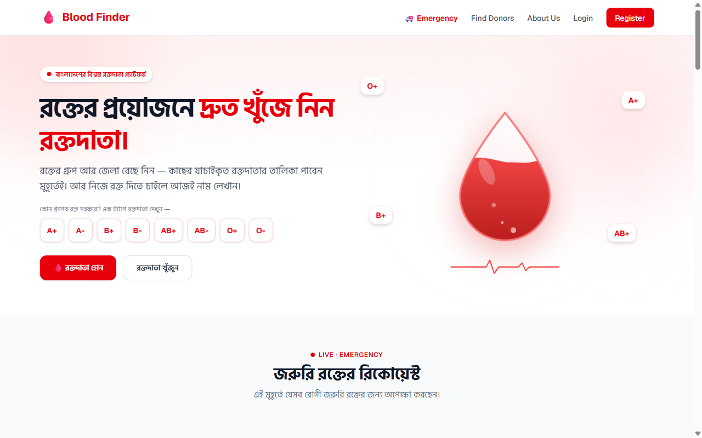
Trust is the product. Security is applied in three layers, so that a bug in one layer is still caught by the others:
A donor's phone number is never shown on the public board. When a donor chooses to respond to an emergency, only then does the requester see the donor's number and call them — so the decision always stays with the donor, and there is no spam or harassment.
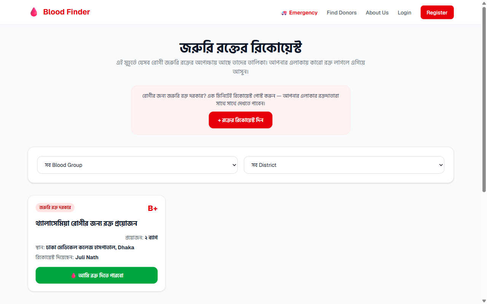
The platform is fully built and live at https://blood-finder-bangladesh.vercel.app. Selected screens are shown below.
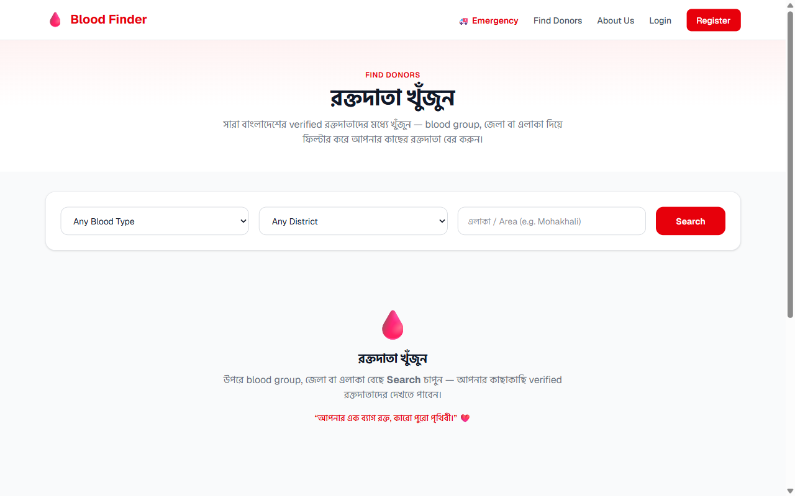
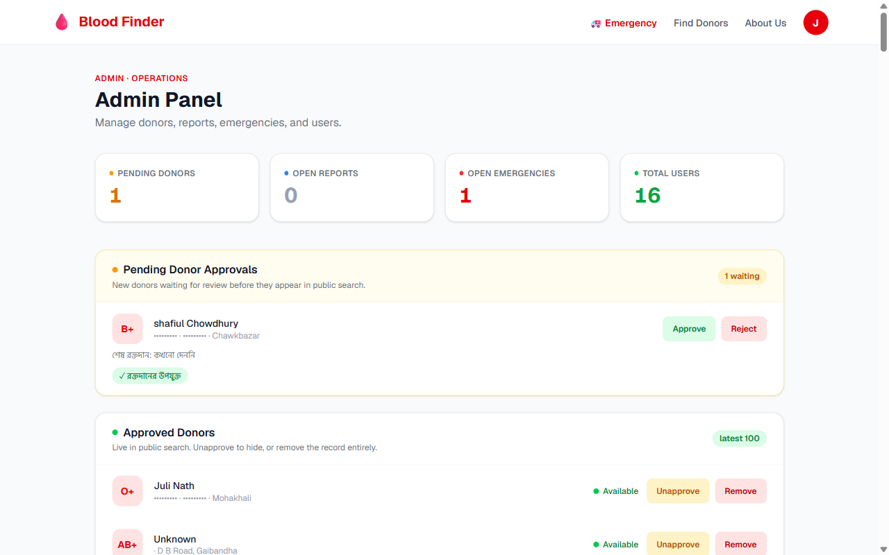
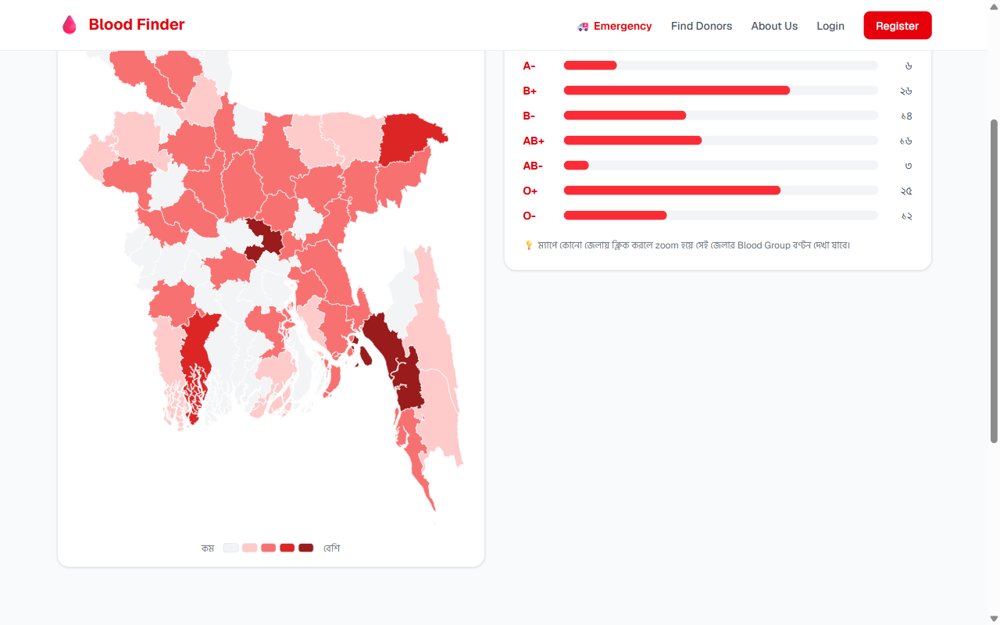
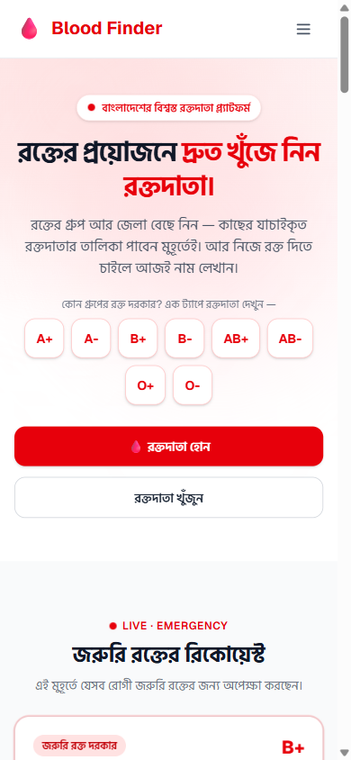
Blood Finder takes a real, painful problem — finding safe blood in an emergency — and solves it with a single trusted platform that is fast, private and free. By removing unreliable middle layers and connecting patients directly with verified donors, it makes the process faster and safer. Just as importantly, it shows how the object-oriented design we learned in the lab — a clean domain model, encapsulation, abstraction and separation of concerns — carries directly into a real, deployable product. The platform is live today and ready to grow into a trusted national blood-donor network.